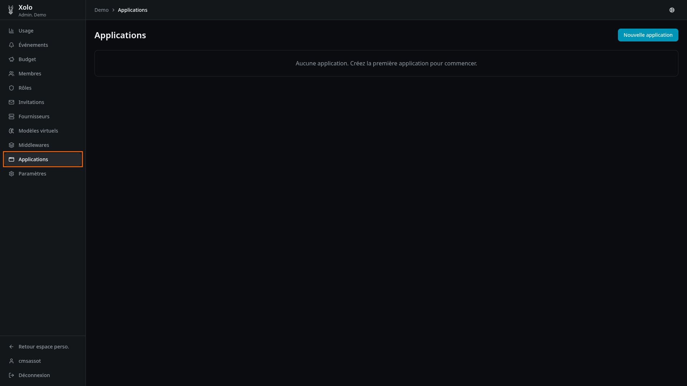
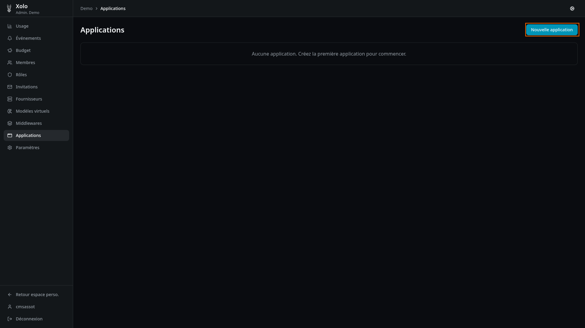
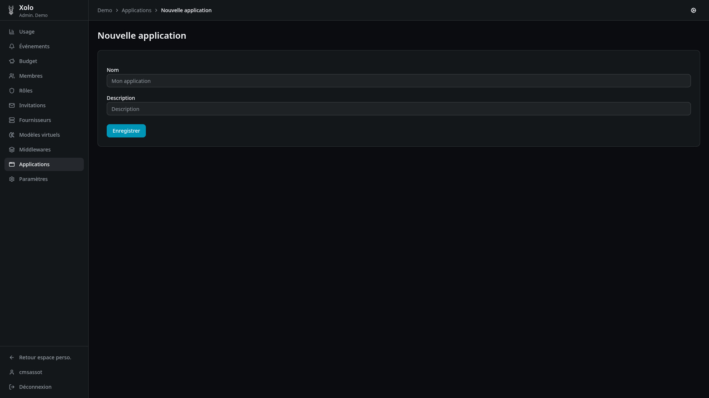
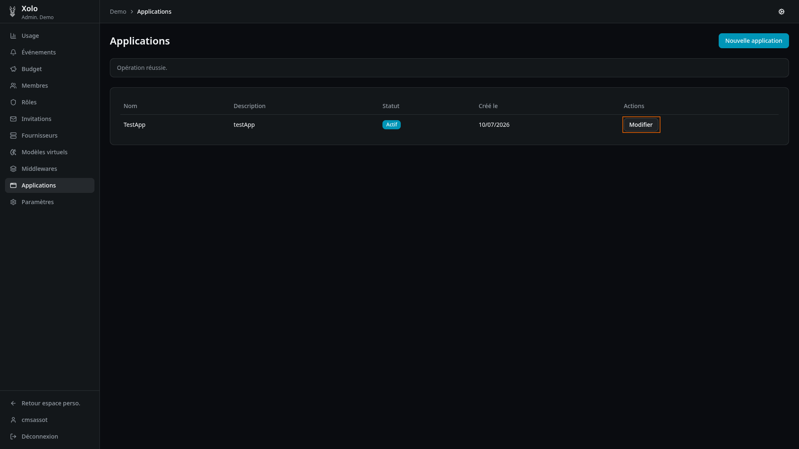
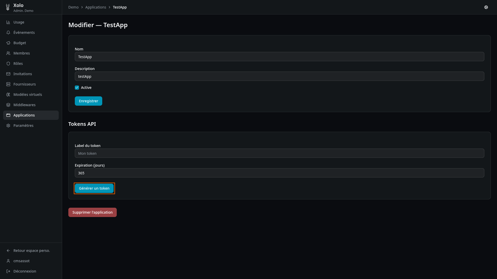
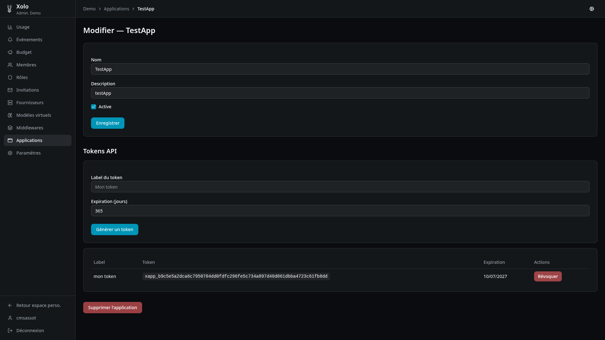
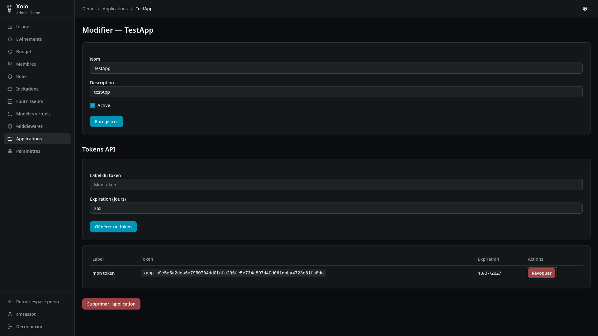

Applications¶

Qu'est-ce qu'une application ?¶
Une application est une configuration M2M (machine-to-machine) qui permet à des services externes de se connecter à Xolo. Chaque application dispose de ses propres jetons API pour l'authentification.
Cas d'usage¶
- OpenWebUI : intégration avec l'interface web OpenWebUI
- Scripts automatisés : scripts ou services qui interrogent l'API Xolo
- CI/CD : intégration dans des pipelines de développement
- Applications personnalisées : toute application nécessitant un accès programmatique
Accéder aux applications¶
- Allez dans votre organisation :
/orgs/{slug}/ - Cliquez sur Applications dans le menu admin
Note : Vous devez disposer de la permission
applications:writepour créer ou modifier des applications.
Créer une application¶
-
Cliquez sur Nouvelle application

-
Remplissez les informations :

| Champ | Description |
|---|---|
| Nom | Nom de l'application (ex: "OpenWebUI Production") |
| Description | Description optionnelle |
- Cliquez sur Enregistrer.
Gérer les tokens API¶
Chaque application peut disposer de plusieurs tokens API.
Générer un token¶
- Ouvrez l'application en modification

- Dans la section Tokens API, remplissez :
- Label du token : nom descriptif (ex: "Token production")
- Expiration (jours) : durée de validité (ex: 365 pour 1 an)
- Cliquez sur Générer un token

- Résultat :

Révoquer un token¶
Pour révoquer un token (le rendre invalide immédiatement) :
- Cliquez sur Révoquer sur la ligne du token concerné

Attention : Un token révoqué ne peut pas être récupéré. Vous devez en générer un nouveau.
Expiration des tokens¶
| Situation | Comportement |
|---|---|
| Date d'expiration définie | Le token devient invalide à la date indiquée |
| Aucune expiration | Le token reste valide jusqu'à sa révocation manuelle |
Modifier ou désactiver une application¶
- Cliquez sur Modifier sur la ligne de l'application
- Modifiez les informations :
- Nom : nouveau nom de l'application
- Description : nouvelle description
- Active : cochez/décochez pour activer ou désactiver
Note : Une application désactivée ne peut plus utiliser ses tokens API.
Supprimer une application¶
- Ouvrez l'application en modification
- Cliquez sur Supprimer l'application en bas du formulaire
Attention : Cette action supprime également tous les tokens associés. Les services utilisant ces tokens perdront immédiatement leur accès.
Jetons d'application vs jetons utilisateurs¶
Xolo propose deux types de jetons d'authentification :
| Caractéristique | Jetons d'application | Jetons API utilisateurs |
|---|---|---|
| Création | Par un admin, dans les paramètres de l'application | Par chaque utilisateur, dans son profil |
| Expiration | Configurable (ex: 365 jours) | Configurable, ou illimitée |
| Cas d'usage | Services M2M (OpenWebUI, scripts) | Accès personnel à l'API |
| Identité | L'application est identifiée, pas l'utilisateur | L'utilisateur est identifié |
Recommandations¶
- Utilisez les jetons d'application pour les services automatisés (CI/CD, scripts, OpenWebUI)
- Utilisez les jetons API utilisateurs pour l'accès personnel à l'API
Utilisation des tokens API¶
Format d'authentification¶
Utilisez le token dans l'en-tête HTTP Authorization :
Exemple avec curl¶
curl -X POST https://xolo.example.com/v1/chat/completions \
-H "Authorization: Bearer xlo_abc123def456" \
-H "Content-Type: application/json" \
-d '{
"model": "mon-org/gpt-4o",
"messages": [{"role": "user", "content": "Hello!"}]
}'
Intégration avec OpenWebUI¶
OpenWebUI peut être configuré pour utiliser Xolo comme backend LLM.
Configuration¶
Dans le fichier de configuration d'OpenWebUI (openwebui.ini ou variables d'environnement) :
# URL de base de Xolo
XOLO_BASE_URL=https://xolo.example.com
# Token API de l'application Xolo
XOLO_API_TOKEN=xlo_votre_token_application
# Modèle par défaut (optionnel)
DEFAULT_MODEL=mon-org/gpt-4o
Variables d'environnement¶
Vous pouvez également utiliser des variables d'environnement :
Vérification¶
Après configuration, les modèles Xolo devraient apparaître dans la liste des modèles disponibles dans OpenWebUI.
Permissions¶
| Action | Permission requise |
|---|---|
| Consulter les applications | applications:read |
| Créer, modifier, supprimer | applications:write |